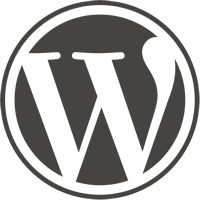

WordPress DAY
BOLOGNA, 13 Settembre 2013
Seguici!
La conferenza
WordPress è è attualmente il sistema per la gestione di blog e contenuti più utizzato al mondo.
Il WordPress Day è un evento per tutti gli sviluppatori di temi e plugin che introduce le best practice e ne mostra case study ad alto livello.
Rimani informato ed iscriviti alla nostra newsletter
Registrati ora!
Il programma
| Time | Track 1 |
|---|---|
| 09:00 – 09:30 | Check-in |
| 09:30 – 09:45 |
Presentazione pugBO e GrUSP- @ |
| 09:45 – 10:00 |
Presentazione wpDayMaurizio Pelizzone - @miziomonGiuliano Ambrosio - @JuliusDesign |
| 10:05 – 10:35 |
WP per Startup - Costruisci il tuo MVP in poche ore con WordPress.Piero Bellomo - @ptbelloprogrammazione |
| 10:40 – 11:25 |
wp-cliFrancesco Laffi - @francescolaffiprogrammazione |
| 11:25 – 11:40 |
Pausa |
| 11:40 – 12:25 |
Caching in Wordpress: ottimizzare le prestazioni dei nostri siti webSimone D'Amico - @dymissyprogrammazione |
| 12:30 – 13:00 |
WPDKGiovambattista Fazioli - @programmazione |
| 13:00 – 14:30 | Pranzo |
| 14:30 – 15:00 |
Sviluppo di CSS agile con Compass / SASSAndrea Verlicchi - @verlokdesign |
| 15:05 – 15:50 |
Wordless: sviluppo temi WP on steroidsFilippo Gangi Dino - @mukkoodesign |
| 15:50 – 16:05 |
Pausa |
| 16:05 – 16:35 |
WordMove: deploy multistaging per wordpressautore - @welaikaprogrammazione |
| 16:40 – 17:10 |
Creare siti multilingueDennis Ploetner - @reallocprogrammazione |
| 17:15 | Chiusura |
Location
- Event location
-
T3LAB
via Sario Bassanelli, 9/11
40129 – Bologna (BO)
In auto
Dall’autostrada uscire a Bologna Arcoveggio, prendere la tangenziale ed uscire subito dopo alla numero 6. Proseguire verso il centro città; dopo aver superato il sottopasso ferroviario svoltare subito a sinistra in via Bassanelli. Il laboratorio si trova a piano terra della Fondazione Aldini (è possibile parcheggiare gratuitamente all’interno del parcheggio della Fondazione).
In treno/autobus
Dalla Stazione centrale camminare per 50 metri verso la pensilina dei bus urbani dell’autostazione dei bus (via Indipendenza) e prendere una qualsiasi linea del 27 (A, B o C è indifferente) direzione Corticella (periferia) e scendere alla fermata “Istituto Aldini”, ovvero dopo 6 fermate. La linea 27 ha una frequenza di 5-7 minuti. Arrivati alla fermata, attraversare la strada ed entrare nel cancello del complesso Aldini. Il T3LAB si trova a piano terra della Fondazione Aldini (edificio laterale sulla destra). È possibile comprare il biglietto presso qualsiasi edicola o tabaccheria al costo di 1,30 €, oppure acquistarlo direttamente a bordo alle self service al costo di 1,50 euro (le macchinette non danno resto). Per qualsiasi ulteriore informazione sugli orari e le fermate delle linee urbane ed extra-urbane visita il sito www.tper.it.
In Taxi
Per prenotare un taxi è possibile contattare:
- CO.TA.BO. – Telefono +39 051-37.27.27
- CAT RadioTaxi – Telefono +39 051-45.90
Per una corsa con partenza dalla stazione centrale o dal centro storico di Bologna il costo indicativo è di circa 8-10 euro.
Pernottamento
Sponsorizza
Un grande evento è fatto anche di grandi sponsor, perché quindi non sfruttare l'occasione e contribuire alla conferenza?
Contattaci per sapere come sponsorizzarci!
Gold
€ 1000- Banner sul sito
- Pubblicità nelle comunicazioni pre-evento
- Autorizzazione a portare pubblicità e gadget (ie. volantini, adesivi, magliette)
- Presenza logo sul programma stampato
- Posizionamento del vostro flyer nella sala
Silver
€ 500- Banner sul sito
- Pubblicità nelle comunicazioni pre-evento
- Autorizzazione a portare pubblicità e gadget (ie. volantini, adesivi, magliette)
- Presenza logo sul programma stampato
Bronze
€ 300- Banner sul sito
- Autorizzazione a portare pubblicità e gadget (ie. volantini, adesivi, magliette)